Construtor de salas
Desenhe a planta no chão e as paredes sobem sozinhas. Corredores, cômodos dentro de salas, meia parede, parede alta.
Mesa virtual 3D para RPG
Construa casas de vários andares com telhado, muros e portões, mude o dia para a noite com um arraste, faça chover lá fora, entre no mapa em 1ª pessoa e leia as pistas da aventura como nos grandes jogos de terror. Tudo numa mesa só, sem precisar saber modelar.
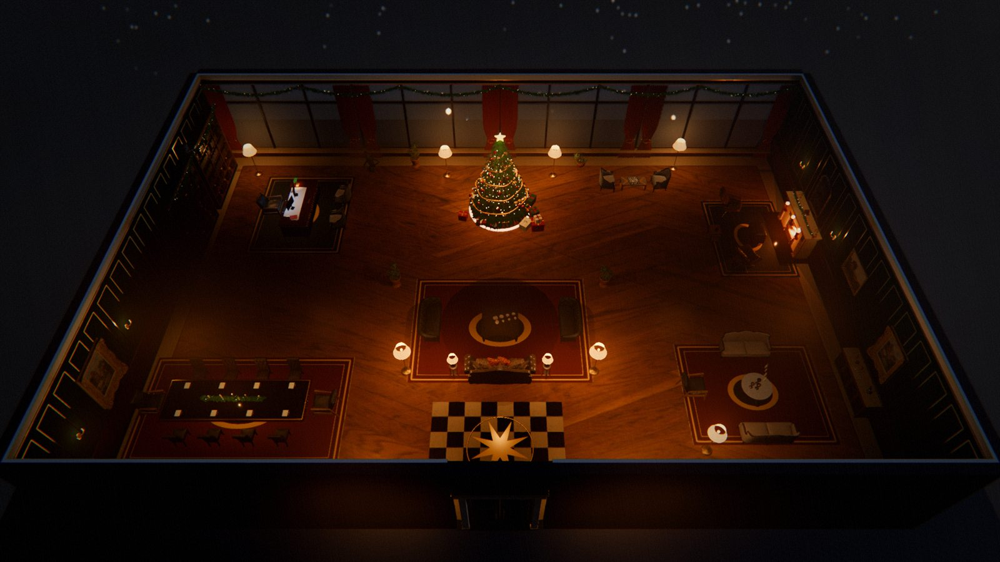
Recursos
Do mapa à atmosfera, sem sair da mesa.
Desenhe a planta no chão e as paredes sobem sozinhas. Corredores, cômodos dentro de salas, meia parede, parede alta.
Simples, dupla, de correr, guilhotina, basculante, veneziana, grade… Clique abre, Shift+clique tranca.
Arraste o relógio do amanhecer à meia-noite. Chuva, tempestade com raios, neve, nevasca e neblina.
Importe PDF ou imagens. Na mesa, a pista fica de pé; ao clicar, vem para a frente da câmera, com zoom e páginas.
PNG, JPG ou GIF animado. Até 9 variações, costas que aparecem quando a câmera passa por trás, e o token caído.
Coloque imagens de qualquer tamanho num papel, aumente com + e −, empilhe vários e monte o seu mapa visto de cima.
Biblioteca de modelos 3D gratuitos organizada por fonte e categoria: casa, cidade, sci-fi, fábrica, fantasia… Arraste para a mesa.
Setas X, Y e Z para mover cada objeto com precisão, girar, inclinar, pôr em cima de mesas. Tudo com Ctrl+Z.
Meça distâncias em metros direto no grid. Marque pontos de interesse ou de perigo com uma tecla.
Salve a mesa inteira num arquivo: salas, móveis, tokens, horário, clima e documentos. Abra cenários prontos.
Quatro níveis de gráficos, limite de FPS e resolução ajustável. Roda bonito no PC forte e leve no notebook.
Até seis andares em camadas. Laje, telha cerâmica, colonial, Eternit, metálica, shingle, vidro, telhado verde… em 4 águas, 2 águas ou meia-água.
Reta, em L, em U, espiral, flutuante ou marinheiro. Ela gira para caber, sobe a altura certa e abre o buraco no andar de cima.
Muros brasileiros com arame farpado, cacos de vidro ou cerca elétrica, até em ruína. Portões de correr, basculantes, pivotantes, cancela… que abrem.
Aperte P e ande pelo mapa na altura dos olhos. O modo cinema põe faixas pretas e desfoque e fica parado onde você olha.
Comece de uma mesa vazia ou abra um cenário pronto, como o Laboratório secreto, com 18 setores e mais de 170 equipamentos.
Construir
Desenhe sala por sala ou peça uma planta pronta. Depois suba andares, ponha o telhado, ligue tudo com escadas e feche o terreno com muros e portões.
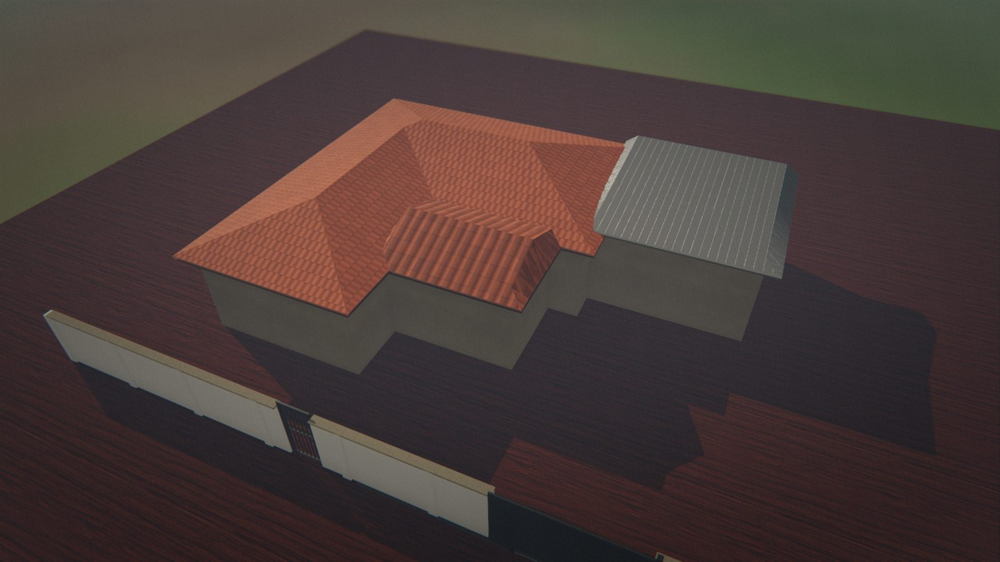
Tempo
Arraste o horário e veja o céu mudar: amanhecer, tarde, pôr do sol, noite estrelada. Pinte a luz de vermelho para aquela cena que ninguém vai esquecer.
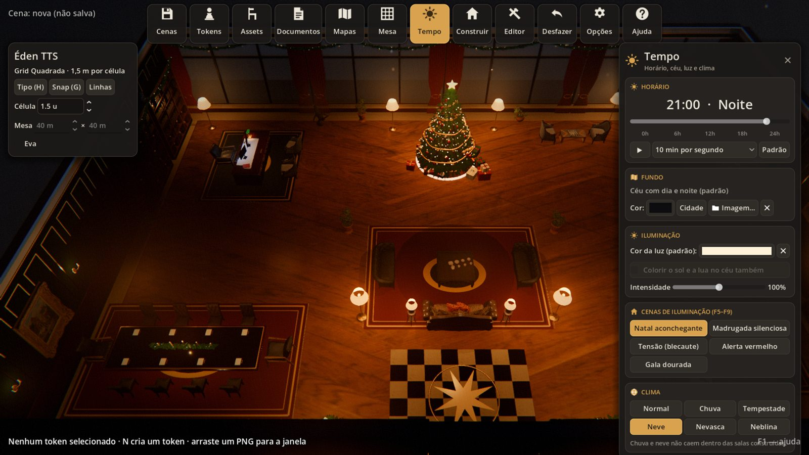
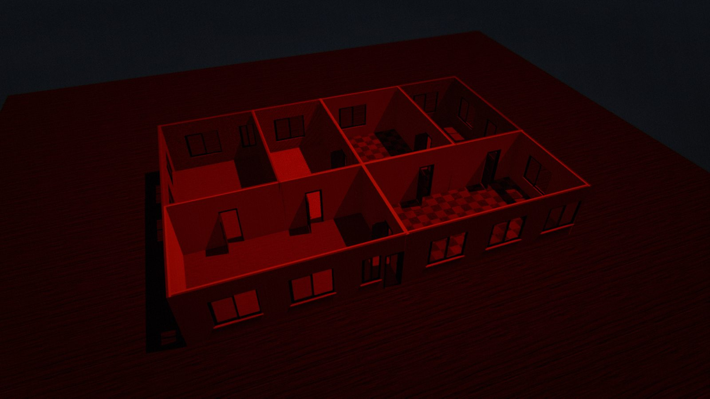
Documentos
Inspirado em Resident Evil e Silent Hill: o documento vem para a frente da câmera, o mundo atrás desfoca, e você vira as páginas com as setas. Importe PDF e ele vira páginas sozinho.
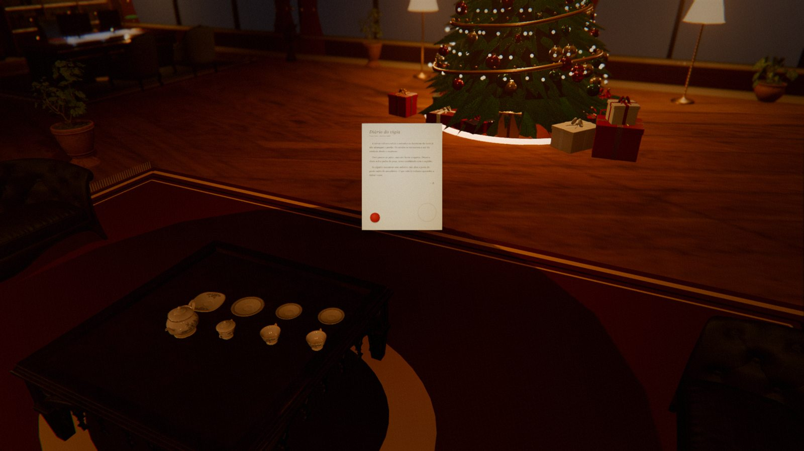
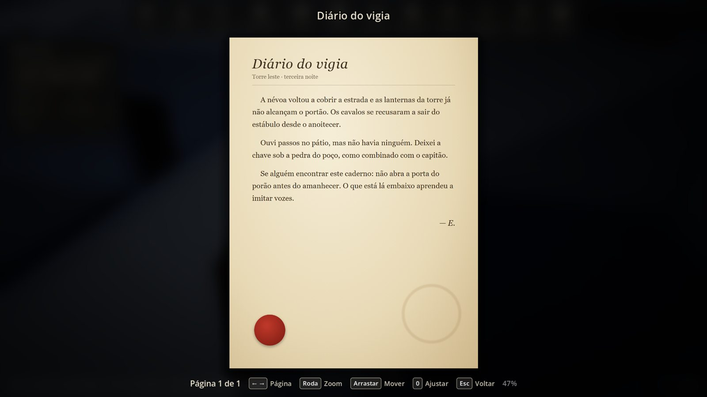
Terceira noite. A névoa voltou a cobrir a estrada e as lanternas da torre já não alcançam o portão.
Ouvi passos no pátio, mas não havia ninguém. Deixei a chave sob a pedra do poço, como combinado.
— página 1 de 3
Cenários prontos
O Complexo de Pesquisa Ômega foi planejado como uma instalação de verdade, com zonas de segurança que vão da recepção até as áreas restritas. Abra e jogue, ou mexa em tudo: as salas são do construtor e os equipamentos se movem pelo editor.
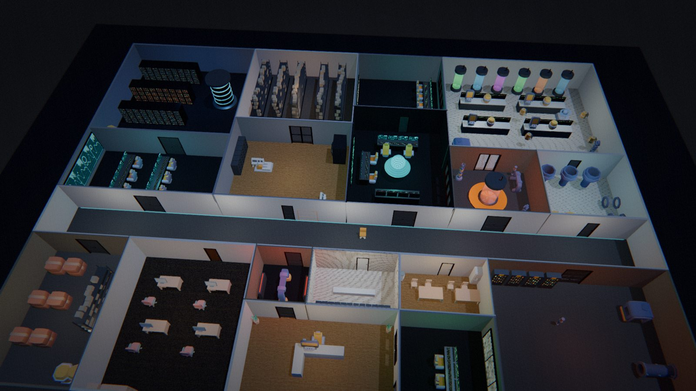
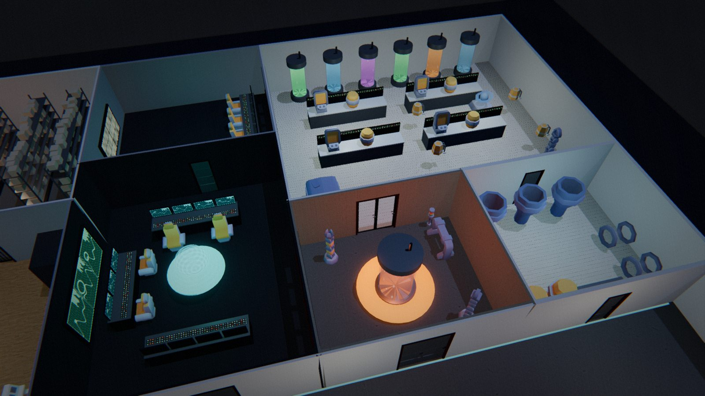
Câmera
Além da câmera tática de sempre, aperte P e a câmera desce até a altura dos olhos, no ponto que você estava olhando. Ótimo para mostrar aos jogadores o que os personagens veem e para gravar cenas.
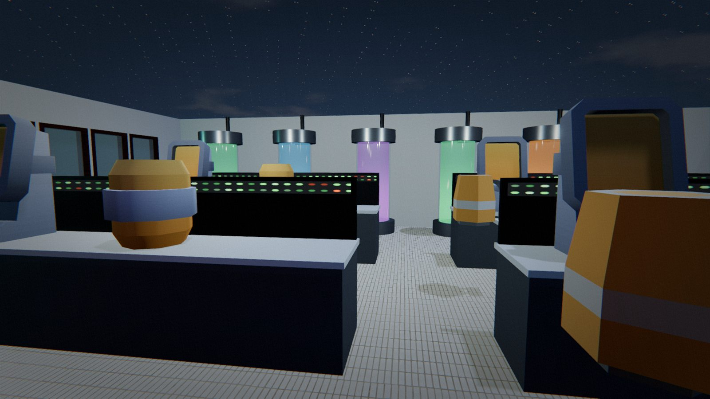
Interface
Cada ferramenta abre num painel próprio, com cartões, ícones e as teclas sempre visíveis. Toque numa aba para ver.
Tempo: horário, fundo, cor da luz, cenas de iluminação e clima, num painel só.
Para o mestre
Prepare a sessão com calma e conduza sem travar: o Éden cuida da câmera, da luz e dos detalhes.
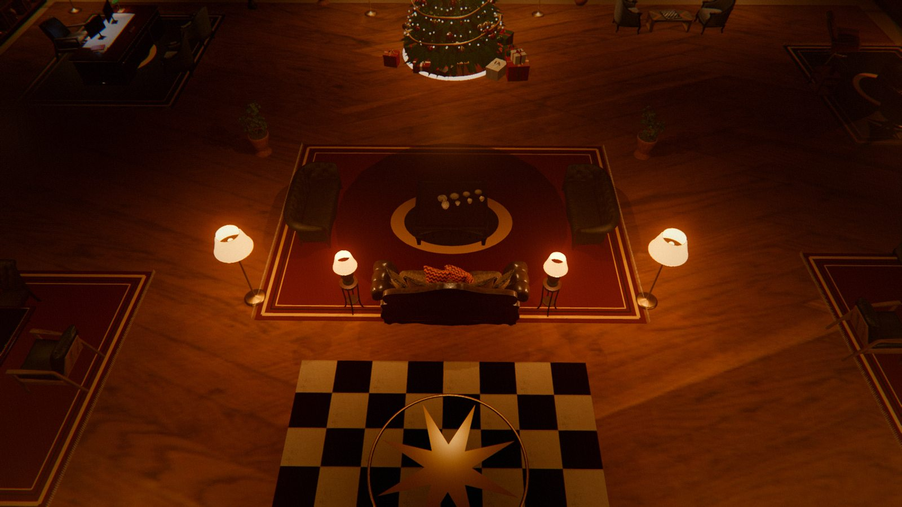
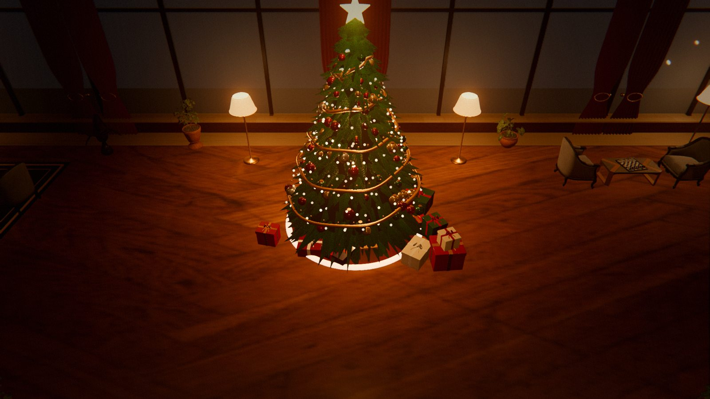
Atalhos
Os principais comandos. A lista completa está na Ajuda, dentro do app (F1).
Galeria
Imagens reais do Éden Tabletop. Clique para ampliar.
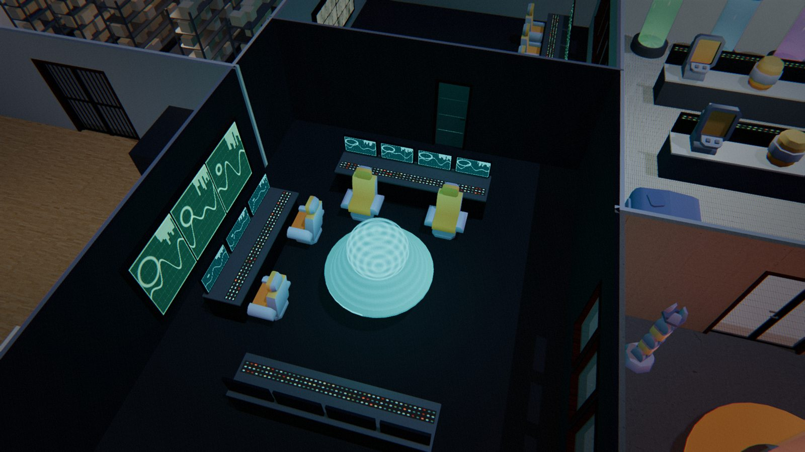
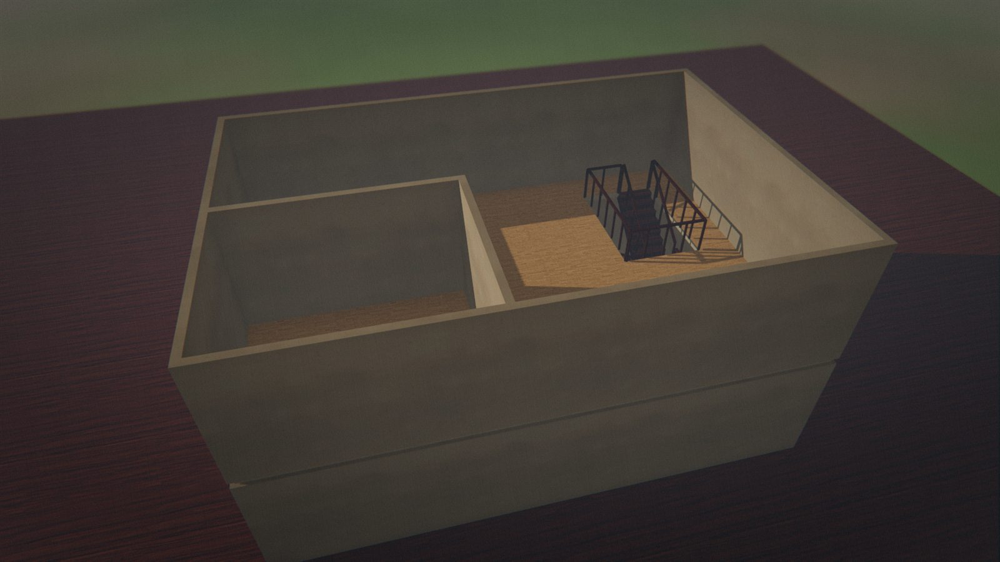
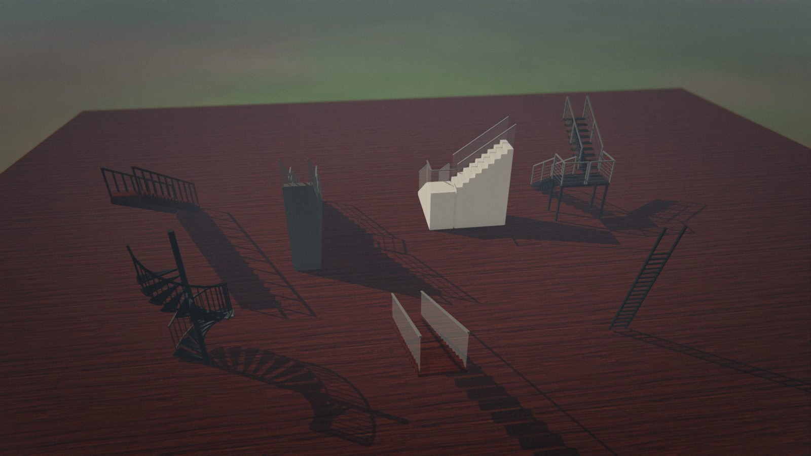
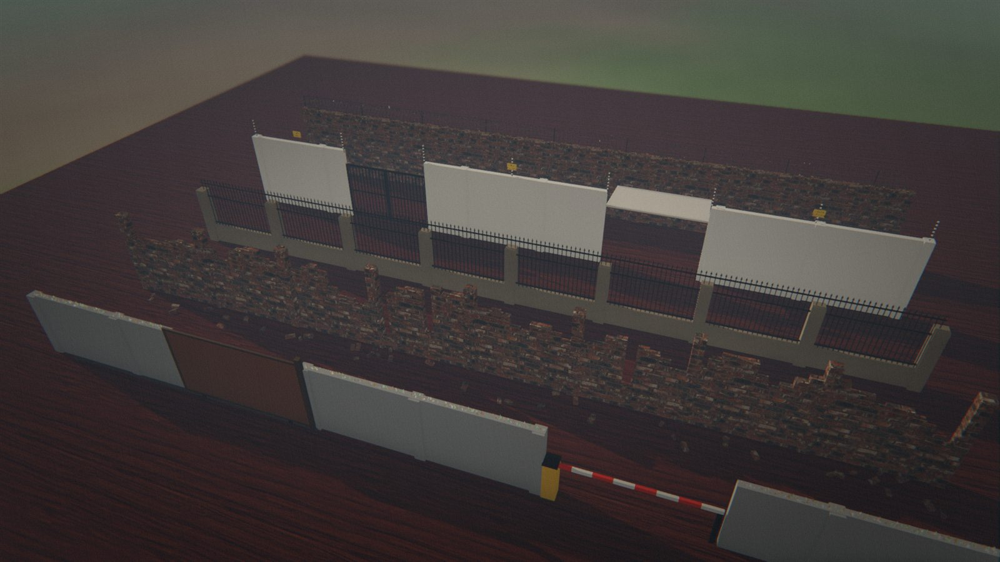
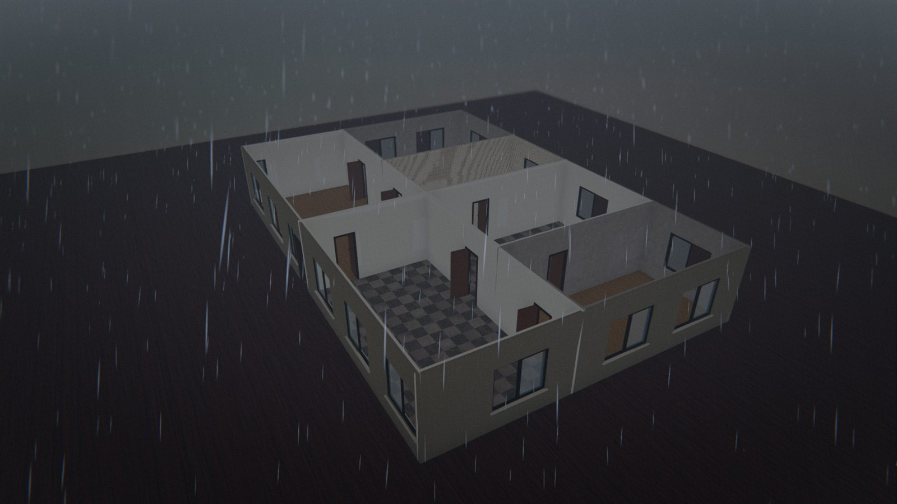
Como funciona
Construa salas, gere uma casa ou solte uma imagem de mapa. Arraste móveis da biblioteca.
Escolha a hora, o céu, a cor da luz e o tempo lá fora. Deixe as pistas espalhadas pela mesa.
Mova os tokens no grid, meça distâncias, abra portas e revele o que estava escondido.
Guarde a cena do jeito que ficou e continue na próxima sessão de onde parou.
Criado, desenvolvido e testado por Reversi. Novidades e versões no perfil do GitHub.
Ir para o GitHubPerguntas
Sim. O Éden é a mesa: grid quadrado ou hexagonal, régua, marcadores e tokens. As regras ficam com o seu grupo.
Pode. Tokens aceitam PNG, JPG e GIF animado; mapas aceitam imagens de qualquer tamanho e modelos 3D (.glb, .gltf, .fbx, .obj).
Não. O construtor levanta as paredes sozinho e a biblioteca traz móveis prontos. É desenhar, arrastar e jogar.
Roda. Em Opções você escolhe entre Baixo, Médio, Alto e Ultra, limita o FPS e baixa a resolução 3D. O Éden também economiza quando a janela fica em segundo plano.
Dá. Ponha laje no teto, crie o andar de cima e ligue com uma escada: ela abre o buraco no piso e os tokens sobem pelos degraus. Cada camada mostra só o andar em que você está jogando.
Dá. Importe o PDF na aba Documentos: cada página vira uma página do leitor, e você coloca o documento na mesa quando os jogadores o encontrarem.
Sim. A cena inteira vai para um arquivo: salas, objetos, tokens, horário, clima e documentos na mesa.
Proposta
O Éden Tabletop busca facilitar o acesso à mestragem de RPG em ambientes tridimensionais.
Hoje existem algumas ferramentas. O Tabletop Simulator, da Steam, permite jogar RPG em 3D, mas não foi feito especificamente para isso e acaba limitado em vários aspectos. O Tabletop de Ordem Paranormal é uma ferramenta incrível, mas de uso interno. Talvez quem mais se aproxime da ideia de um tabletop 3D seja o Nexus Tabletop; só que ele tem uma barreira de entrada considerável, principalmente para quem não sabe modelar: mesmo usando assets da comunidade, é preciso conhecer Unity, o que deixa tudo bem complexo para quem não tem experiência com desenvolvimento.
O objetivo do Éden Tabletop é quebrar essas barreiras: permitir que jogadores e mestres criem, organizem e conduzam suas sessões de RPG em ambientes tridimensionais de um jeito acessível, intuitivo e prático, sem precisar dominar modelagem 3D ou programação.
Sobre o desenvolvimento
O Éden Tabletop foi desenvolvido com auxílio de ferramentas de inteligência artificial, usadas como suporte em algumas etapas do processo. A concepção, o direcionamento, as ideias, a criatividade, o design, os testes e todas as decisões do projeto partiram de mim.
Eu sou a mente por trás do Éden Tabletop: idealizei o projeto, defini os objetivos, pensei nas funcionalidades, testei as possibilidades e conduzi o desenvolvimento. A inteligência artificial foi uma ferramenta de auxílio, não a responsável pela criação ou pela concepção do projeto.
— Reversi